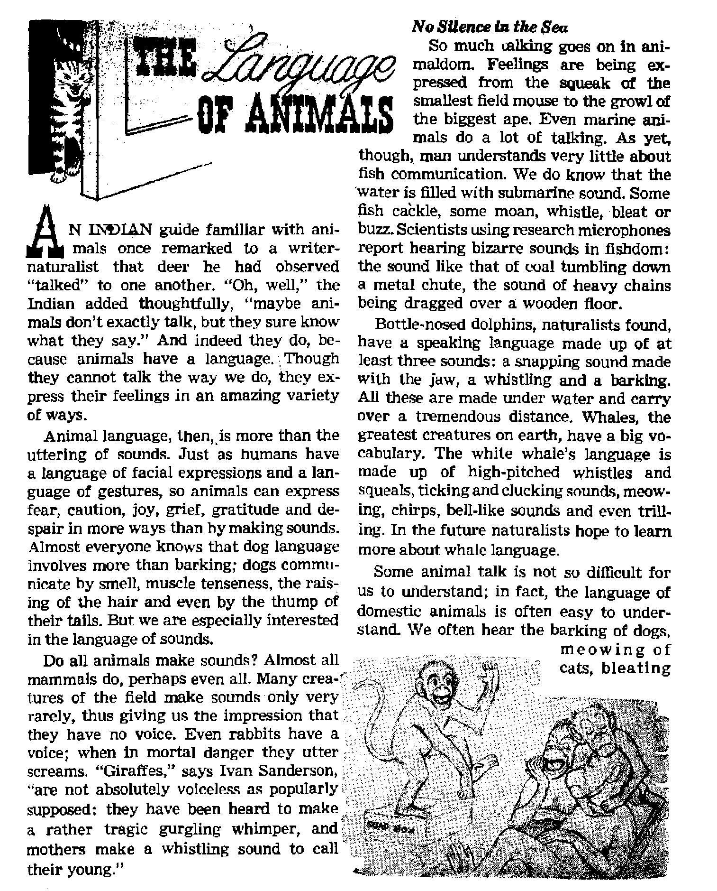

CAN YOU CHOOSE YOUR DESTINY?
TV—New Aid to Education?
The Language of Animals
Electrons Compile Concordance
THE MISSION OF THIS JOURNAL
News sources that are able to keep you awake io the vital issues of our times must be unfettered by censorship and selfish interests. “Awake I’* has no fetters. It recognizes facts, faces facts, is tree to publish facts. It is not bound by political ambitions or obligations; it is unhampered by advertisers whose toes must not be trodden on; U ia unprejudiced by traditional creeds. This Journal keeps itself free that it may speak freely to you. But it does not abuse Its freedom. It maintains integrity to truth. '
“Awake I” uses the regular news channels, but is not dependent on them. Its own correspondents are on all continents, in scores of nations. From the four corners of the earth their uncensored, on-the-scenes reports come to you through these columns. This journal’s viewpoint is not narrow, but is international. It is read in many nations, in many languages, by persons of all ages. Through its pages many fields of knowledge pass in review—government, commerce, religion, history, geography, science, social conditions, natural wonders—why, its coverage is as broad as the earth and as high as the heavens.
“AwakeI” pledges itself to righteous principles, to exposing hidden foes and subtle dangers, to championing freedom for all, to Comforting mourners and strengthening those disheartened by the failures of a delinquent world, reflecting sure hope for the establishment of a righteous New World.
Get acquainted with “Awake]” Keep awake by reading “Awake 1”
Published Semimonthly By
watchtower bible and tract society of new york, inc.
117 Adams Street, Brooklyn 1, New York, LL S- A, K H. Knorr, President Grant Suithr, Secretary
Printing this issue: 2,300,000
ether Imiiuoh in whiih “AwiUl" li pukllthM; SetttfnvttFp-—FMjJflb. Frewt1,
Greek, Holland 1st, llaliuh Norwegian. Spanish, hwodlah,
Mmtlily—Duibb, Jiwcw, frtlwMfle, Ukrainian,
Y**rly subscription m*
Ofloa for semimonthly editions
AimfIm, U,Sm# in Adams BL, Brooklyn 1, N-Y. $1 Aartnlli, 11 Beresford JW., SLrathfleM. N.fLW. &/-Canada, 150 BrMgolsnd Are., Toronto 10, Ont. $1 England, 34 Craven Terrace, Lcuvlnn W. a 7/-Rnr ZaafenJ, q.P.O. Boi 90. Weill nett®. C. 1 7/-South Africa, Prints Bag, ElaDdafonwln, Tv], 7/-
■ mi th I) idltiont Mat half ths ihon rain.
Five cents copy
Hsinitlsnm should he aeht u> ofH« in your coun* try in rejulaUiws io fiiaj-urtte
safe delivery of money. Remittances are adopted at Brooklyn from couaLriee when no dto h Iocal*d, by iiiler national nwnay order only. SrUwcrlptL’m rates in different countries art here staled In local currency. Notice of expiration (with renown blank I is Milt kt least two l^ues before aubcripLlcni expires, Change (rf addriu when writ trf our office may be expected effective within one momfe. Send your old as well as new atMrewh
Entered « ucond-dau tastier at Brcnkta, N.Y.
Printed in IX S.A.
CONTENTS
Tax Collectors' Delight: the Automobile 8
New Camera Takes Heat Pictures 12
Speedy Electrons Compile a Concordance 13
Priests Accuse Priests of Political
Wrist Watches Without Mainsprings
“Your Word Is Truth”
Jehovah's Witnesses Preach in All the Earth—Japan
46T N God we trust,” pro-I claims the money and even the postage stamps of one of the world’s leading nations. Yet as each year passes that nation’s crime rate mounts.
In wartime the slogan ‘God bless our nation’ is common; but the plea; ‘Our nation return to God’ is rarely heard.
A California manufacturing plant has regular morning prayer. Its president says: “I feel that God is definitely our partner. I don’t think we could have succeeded without him.” Is prayer to be a new means of achieving business success and beating out the competition?
Archbishop Richard J. Cushing of Boston prayed: “Make our railroads run regularly, on time and comfortably.” Life magazine carried a picture of a girl saying her rosary in an effort to get God to side against an opposing basketball team. The Leicester, England, Council of Churches asked God to guide the settling of an industrial dispute, and in a Hollywood church prayers were asked for God’s guidance in a dispute over a labor contract.
Is God a magic charm, something like the jinni of Aladdin’s lamp, to be called upon when someone needs a war won, wants a fatter commercial profit, a more efficient rail service, a victory at a ball game or success in gaining higher wages or in opposing them?
Many people might like the idea of God’s being such a magic charm that merely needed to be rubbed with prayer whenever they wanted to get their own way, but that is just not the case. These people say: “My will
be done.” How different was Jesus’ right prayer: “Thy will be done”!—Matthew 6:10.
Oh, they would never admit that they put their will first. Instead they say: “I want this—if it is God’s will.” But they hope it is ‘his will,’ and beyond what they, are asking for, they usually have very little concern about just what his will is. This fact is evident from the way they ignore the one Book that explains his will and tells what he expects of us.
The phrase “what he expects of us” in itself sounds strange to many persons today. They have grown to think that just being a “good” person (whatever that is) and a more-or-less-regular church attendee is all that is required. But the very fact that they thins this is sufficient shows that they have not even been concerned enough about God’s will to examine his Word to see what that will is.
One of the first things that becomes evh dent upon examining that Word is that we are to serve Him, not that he is to serve us.
This, when you think of it, is most logical. The parent does not obey the child, but the child obeys the parent. The child is given duties, obligations, responsibilities, and these must be carried out. Can a child of God expect to do less?
What does God require of his children? One of his requirements is that we accept and learn the instructions that he has given us, that we be truly concerned with the doctrines contained in His Word, the Bible. Yet how many people today really know what is contained in that Book op what its true doctrines are?
Do you? Perhaps so, but not a great many of earth’s peoples do. Could you, for example, turn right now to a chapter in the Bible that contains the “Lord’s prayer”? or the “Ten Commandments”? or that explains the reason for death? or that tells when Satan’s wicked system will end? or that tells of Jesus’ sacrifice? or that relates the blessings to come to earth under God’s righteous kingdom?
God says we should know these things. That is a part of his will. Anyone who refuses to learn them is saying selfishly: ■ “My will be done” instead of “Thy will be done.”
How do we know that it is God’s will that we know these things? Because Hosea 4:6 says: “My people are destroyed for lack of knowledge: because thou hast rejected knowledge, I will also reject thee.” And, further, because the apostle wrote to the young Christian Timothy: “Do your utmost to present yourself approved to God, a workman with nothing to be ashamed of, handling the word of the truth aright.”—2 Timothy 2:15, New World Trans.
The right course is not that of trying to use God to get one’s own way, but that of being obedient to God, of appreciating the importance of his Word and of humbly conforming to the instructions it contains. Thus the prophet Micah wrote: “He hath showed thee, O man, what is good; and what doth Jehovah require of thee, but to do justly, and to love kindness, and to walk humbly with thy God?”—Micah 6:8, Am. Stan. Ver.
What does it mean to “walk humbly with thy God”? To have humility means to consider or make oneself low in rank, an inferior, a subordinate. One who is low in rank never gives orders to his superior. Instead, he obeys the instructions of that superior. All too many people have this backward, thinking God is just someone to be called upon by men on life rafts or by others who have no one else to appeal to at the moment. They consider God a “good thing,” financially speaking, as someone to help them swing a business deal, win a basketball game, settle a political or labor problem or make the trains run on time. No wonder they feel slighted when such prayers are not answered.
They have reversed their position. It is man who must first humbly serve the great Creator, not, as many persons seem to think, the other way around. Will you recognize this fact, accept and study God’s Word and conform your life to his instructions? Doing so is the only way to gain his favor and the marvelous blessings that come from his hand, even including unending life.
The fool hath said in his heart, There is no God.—Psalm 1^:1.
SOME people believe that you have hardly any say at all on what your final destiny will be. They believe that fate or the stars or predestination have determined the course you will take and that there is little or nothing you can do about it.
JWany persons think your life is fixed, your fate determined and your course predestined. Others disagree. What are the fads')
goes so far as to teach that two seeds, a good and a bad one, entered the life stream of humanity in the garden of Eden, and that since each person has inherited one seed or the other, nothing can b'e done to change or to help him. As a result of their refusal
They believe you are like a train on a railroad track, which cannot turn aside but must follow the track wherever it leads and to whatever destination it goes. When a man dies in an automobile accident, they say: “God willed it.’’ When taking a dangerous chance, they say: “When my time’s up, I’ll go.”
Some people believe that whether you will be good or bad has already been set, too. The noted Westminster Confession of Faith goes so far as to say: “By the decree of God, for the manifestation of his glory, some men and angels are predestinated unto everlasting life, and others foreordained to everlasting death. These angels and men, thus predestinated and foreordained, are particularly and unchangeably designed; and their number is so certain and definite that it cannot be either increased or diminished,”1
One of the most extreme views of predestination is that held by a small American group known as the Two-Seed-in-the-Spirit Predestinarian Baptists. This group to try to teach others, this group had dwindled to a mere 201 members by the time the last religious census was taken.
But is man like a train? Is his destination as fixed as if he were confined to a railroad track? Or is he like a car that can change its course, reverse its direction, turn from a wrong way and go toward any destination that the driver wishes?
Man is not like the train; he is like the car. He does have the say over which way he will go, what course he will take and what destination he will head toward. ‘ ‘But,” someone will protest, “does not the Bible say God predestinated?” Indeed it does, in the Authorized or King James Version, but it is interesting to see just what it is that he has “predestinated.”
What Has Been Predestinated
Certain things God has predestinated, ordaining that they must come to pass. Other things he has foreseen, looking into the future and telling us what the outworking of certain events would be.
He has predestinated, for example, that “the kingdom of the world [will] become the kingdom of our Lord and of his Christ, and he will rule as king for ever and ever.” He has predestinated that he will “create new heavens and a new earth; and the former things shall not be remembered, nor come into mind." He has foreseen that “in the last days critical times hard to deal with will be here” and that “expressions inspired by demons ... go forth to the kings of the entire inhabited earth, to gather them together to the war of the great day of God the Almighty."—Revelation 11:15; Isaiah 65:17; 2 Timothy 3:1; Revelation 16:14, Am. Stan. Ver., and New World Trans.
Further, he has predestinated that there will be a class of persons who serve him: “Moreover whom he did predestinate, them he also called’’ But he predestinated only this class, not the specific individuals who would be in it, as other texts pointedly show. Thus, he has not predestinated your future, nor that of any other specific individual, but it is by their course that those who are called determine whether they will prove worthy of that calling and thus receive his blessings and everlasting life. —Romans 8:30.
Even further, he has known “all his works from the beginning of the world.” (Acts 15:18) But this text does not say that he has predestinated or even chosen to know all the works of Satan or of men or your works, or the effect his works will have upon you. The Bible definitely shows that your course is not predestined, but that you have control over it and are responsible for it. Were that not true the apostle would not have written to the Corinthians: “I am afraid that somehow, as the serpent seduced Eve by its craftiness, your minds might be corrupted away from the sincerity and the chastity that are due the Christ. And no wonder, for Satan himself keeps transforming himself into an angel of light.” If man had no choice over his destiny then there would have been no need for the apostle’s concern over whether these Christians would continue to hold to the right course.—2 Corinthians 11; 3, 14, New World Trans.
Further Proof That Man Can Choose
Again the apostle wrote; “I know that after my going away oppressive wolves will enter in among you and will not treat the flock with tenderness, and from among you yourselves men will rise and speak twisted things to draw away the disciples after themselves.” If these Christians’ ultimate end had already been decided by God then there would have been nd need for this warning.—Acts 20:29, 30, New World Trans.
If any question remains about whether man’s course is fixed or whether it can be controlled by him it should be removed by the fact that the apostle also warned those of the Galatians who had “spiritual qualifications” to “keep an eye on yourself, for fear you also may be tempted.” They needed to watch their own course, for they had control over it and were responsible for it. —Galatians 6:1, New World Trans.
Further, the matter is made positive by the apostle himself, who had been ‘called and sanctified by the spirit,’ having been “laid hold on by Christ Jesus.” He said: “Brothers, I do not yet consider myself as having laid hold on [that for which he had been called]; but there is one thing about it: Forgetting the things behind and stretching forward to the things ahead, I am pursuing down toward the goal for the prize of the calling above and which God extends in Christ Jesus.”—Philippians 3: 12-14, New World Trans.
Certainly if man had been predestined or fated to a particular course over which he had no control the apostle would not have been so concerned lest he himself fall away.
So in view or these direct statements from the Scriptures it is evident beyond doubt that individual men are not predestinated or fated to a particular course, but that you are free to choose your own course, to determine your own destiny, and that a falling away is possible even among those of the elect who do not carefully watch themselves and regularly examine the way they are going.
What We Must Do
This establishes two further points for us. First, since we are like a car, able to go any direction, we must be sure that we are on the right road. Second, since we are not confined to that road, as a train would be, we must be sure that we stay on it, not taking a wrong turn, as the apostle was concerned lest even he might do.
The fact that we do have this choice, and the urgency of making the right one, was emphasized by Moses, who told the Israelites: “I do take the heavens and the earth as witnesses against you today, that I have put life and death before you, the blessing and the malediction, and you must choose life in order that you may keep alive, you and your offspring, by loving Jehovah your God, by listening to his voice and by sticking to him, for he is your life and the length of your days.”—Deuteronomy 30:19, 20, New World Trans.
How to choose the desirable destiny is shown by this further Biblical statement: “He who is sowing with a view to his flesh will reap corruption from his flesh, but he who is sowing with a view to the spirit will reap everlasting life from the spirit.”—Galatians 6:8, New World Trans.
How do you sow with a view to the spirit? By seeking God’s way and continuing to follow the right course he has outlined. How do you do this? By referring to the road map or guidebook that he has provided, the Bible, and really following its instructions.
We must, “as newborn infants, form a longing for the unadulterated milk belonging to the word, that through it you may grow to salvation.” Thus, again, salvation is not something predestined for us, but is something we must grow toward through this milk contained in God’s Word.—1 Peter 2:2, New World Trans.
The importance of that Word is shown by Psalm 119:9, which asks: “Wherewithal shall a young man cleanse his way?” and answers: "By taking heed thereto according to thy word.” It was further pointed out by the apostle Paul when he told Timothy that the holy writings are “able to make you wise for salvation.” Have you really heeded these urgent writings? Not many persons really have, but it is vital to do so.—2 Timothy 3:15, New World Trans.
In view of its importance, the Bible is not such a large book. It is not nearly as large as a big dictionary. But many people know much more about the dictionary, which tells them how to spell and what words mean, than they do about the Bible, which shows the way to life. Yet, which is more important, your spelling or your life?
Turning the Right Way
The Bible enables you to make your mind over, thus turning it in the right way. This is true because the mind is like a vessel. You can put good things into it or bad ones, making it either an honorable vessel or a dishonorable one. It is up to you.
Your mind takes the information you put in it and acts upon that information, using it to form your opinions and decide your course. So accurate information is necessary in order to know and take the right course. Filling your mind with good things will enable the bad ones to fade
through disuse. An outstanding proof or this is the course taken by Jehovah’s witnesses. Through a real study of the Scriptures they have changed their minds, their course, and therefore their destiny, changing it from the one toward which the world is progressing to the good one God has outlined.
The Scriptures show that this is what Christians would do, telling us: “Quit being fashioned after this system of things, but be transformed by making your mind over, that you may prove to yourselves the good and acceptable and complete will of God.”—Romans 12:2, New World Trans,
This change brings new thoughts, a new vocabulary, a new and perhaps cleaner language, and a whole new way of life. It has done so for Jehovah’s witnesses, and they are much happier for it. As the Ephesians were instructed, it enables you to “put away the old personality which conforms to your former course of conduct and which is being corrupted according to his deceptive desires” and to “put on the new personality which was created according to God’s will in true righteousness and loving-kindness.”—Ephesians 4:22-24, New World Trans.
it 18 up to You
So again we see that you are not fated or predestined to a particular course, but that it is within your power to change, to make your mind over and to improve your destiny. No one can blame his course on fate. No one can say God has already decided his destiny. No one can self-assuredly feel that he cannot fall away from true worship, or be sure, except by checking it according to God's Word, that he has it now. Rather, we must really examine God's Word to be sure that our course is right, must believe that Word and must change any course that is wrong, really bringing it into harmony with God's instructions.
God, through his written Word, says: “Incline your ear, and come unto me: hear, and your soul shall live.” (Isaiah 55:3) The choice, therefore, is up to you. The man of God, Joshua, urged the Jewish nation: “Choose for yourselves today whom you will serve.” So since you do have the say about your destiny, choose it wisely and well. There is only one wise course. Joshua expressed it long ago, when he said of his choice: “But as for me and my household, we shall serve Jehovah.” —Joshua 24:15, New World Trans.
TAXCOLLECTORS DELIGHT THE AUTOMOBILE
Fe\y things yield SUCH a nuge income iur iua coueciurs as nues uie auiornuoile* An item in the Shreveport (Louisiana) Times explains: uSometimes people ask, Why can't automobile manufacturers make a good car to sell for about $1,500?
Manufacturers—several of them—do make good cars that, so far as profit and cost of construction are concerned, could sell for around $1,500. But there is a little matter of approximately $158 on each car of this type for various kinds of taxes on materials, parts and their ^transportation. Then, there is another matter of approximately $150 in corporation income and other taxes paid by the manufacturer. Next comes an average estimated $34,81 property and similar taxes paid by dealers. All of this adds up to very close to $500, making the $1,500. car approximately a $2,000 car so far as the purchaser is concerned—all of the figures cited coming from data compiled by the automobile industry. Oh, yes, there is also the state,.sales tax. This is not on the original $1,500 alone, but on the total price of close to $2,000 and thus actually becomes a tax on taxes as well as a tax on the car to a certain extent. It will add about $40 more to the total cost. So, there's your $1,500 car—but it costs more than $2,000. . , . And, don’t forget the minute you start driving this $1,500 car which cost $2,000, you’ve got a tax on gas, a tax on oil, a driver's license tax, annual car tax, etc.”
number of people on a nationwide or even international scale staggers their imagination.
IE astounding drawing power of television is a modern tw’entieth-century miracle. At ten o’clock on an ordinary evening more Americans watch television than vote in the presidential elections. In one week the average time spent watching TV was eighteen hours and twenty-four minutes. Eighty percent of the people in Chicago are reported to have telephones, central heating and bathtubs, but 97 percent have TV sets.
World-wide the drawing power of TV is evident. There are tw o million sets in Canada, six million in Great Britain and half a million in Western Germany. France has its TV clubs, where many people get together to watch one set. Britain’s fondness for TV equals its interest in soccer and horse racing. Forty-six nations on both sides of the Iron Curtain have, to varying degrees, succumbed to TV.
Will all this televiewing mean that there will be a generation of illiterate, TV-trained children who will know nothing more than the jokes of the leading comedians and the standard outcome of old-time western movies?
Not if modem educators have their way. They are converting the miracle of TV to an educational use—using it to help ease the teacher shortage, to expand education and to make the process of learning less painful and more enjoyable.
These educators reason that TV’s use in teaching can be revolutionary. The possibility of presenting brilliant men of accomplishment and exceptionally gifted teachers to an immense
TV in the Classroom
Televised education would enable all children, even in small rural areas, to benefit from the best instruction. It will allow the superior teacher to be brought right into the classroom, just as books bring the superior writer there. Since the TV teacher reaches so many more students than the classroom teacher does, she can spend much more time in preparing the lessons. A whole day may be spent in preparing just one half-hour TV lesson, but it is then presented to enough students to make the time spent in preparation worth while.
The current American experiments with TV education do-not substitute a studio teacher for a classroom teacher, but provide both. The classroom teacher first prepares the students for the TV lesson, then conducts a question-and-answer session after the telecast. Thus the TV lesson does not stifle discussion nor does it make the students mere silent, passive learners.
Fifth-grade students in more than forty schools in the Pittsburgh, Pennsylvania, area have studied reading, arithmetic and French through television. One of the most impressive evidences of the students’ interest in the TV lessons came when one school dismissed for two
days. When school .resumed, imagine the surprise of the teacher who found that not one of her students had missed the televised lessons!
Television’s use in education falls into three basic fields: (1) educational programs broadcast as a public service over regular commercial stations; (2) educational programs broadcast over noncommercial stations supported by schools, colleges, universities, state or private funds; (3) closed-circuit (non-broadcast) television classes where the teaching done in one room is carried by a special cable to other rooms, where many students can benefit from the instruction that is being given.
The closed-circuit method is, of course, the cheapest, and thus has been the most widely used. But educational broadcasts over both commercial and noncommercial stations have progressed much farther than many people realize.
Ocw Commercial Stations
Last year educational programs were offered over 198 local TV stations in 144 cities throughout the United States. These were presented by state departments of education, colleges, universities, county school systems, by city school systems and by individual schools. Some of them were series of programs up to thirty-nine weeks in length, and many were reported to have been on the air for several successive school years.
Some of these were programs of adult education, some were telecourses, giving college credits for home students, and some of them, broadcast during school hours and received in the classrooms, presented curriculum enrichment for the students themselves, transporting many thousands of them to scenes of historical, scientific or cultural interest.
In an upstate New York experiment seniors still in high school could earn college credits through TV lessons. Texas is trying to reduce the teacher shortage by teaching new ones at home through television. The course is broadcast over fourteen stations in twenty-six half-hour programs. Telestudents who complete the course and pass the examination can receive emergency teachers’ certificates, which later, through on-campus work, could lead to their obtaining permanent certificates.
Even more impressive is the activity of the more than twenty noncommercial educational stations throughout the United States. About a fourth of the nation’s population lives within the viewing range of these stations.
WOI-TV at Iowa State College (educationally owned, though not on one of the special channels reserved for educational stations) has been a leader in this field. It provides programs on music, science, history, language, reading skills and arithmetic to 40,000 elementary school pupils in central Iowa. It also has proved that an agricultural expert can reach more farmers in a 30-minute TV demonstration than he could in weeks of travel around the countryside.
In Chicago 1,325 persons enrolled in junior college courses given for credit over a local noncommercial TV station. Registrations and final examinations are at the college branches, but the classes are telecast three days each week.
The Greater University of North Carolina uses station WUNC-TV to provide programs on agriculture, health, art, books and many other subjects, for persons in many walks of life. College courses are telecast for college credit, and programs are also provided for the grade and the junior and senior high schools of North Carolina.
Even literacy classes are conducted over WKNO-TV in Memphis, Tennessee. Thirty-four TV-equipped reading centers were set up, and more than 750 adults enrolled. Many more study at home, learning to read and write through following the TV classes.
A real boost for these educational stations came last March 11, when the National Broadcasting Company began transmitting live educational programs free of charge to noncommercial educational stations in the United States. Presenting “men of scholarly attainments,” the programs, aimed at upper high school and college level students, provide leading teachers from great universities, as well as specialists in other fields. This twenty-six-week series of programs is transmitted during the afternoon when it does not conflict with the network’s regular broadcasting schedule.
The cost of putting on educational programs is far lower than that of regular telecasts (WGBH-TV in Boston broadcasts weekday evenings for a whole year for $300,000—an acceptable cost to a network for just one 90-minute color spectacular), but the cost still is high. Thus, despite considerable accomplishments made in this field, the emphasis at the present time is not upon the operation of educational stations to broadcast to the general public but upon the application of closed-circuit television to the teaching that is done in the classrooms. How is this done?
In closed-circuit television the picture is carried by a special cable that is connected directly to the television sets that will receive the picture. This direct hookup naturally is far less expensive than a television broadcasting station, but it still enables one teacher to reach many students in several classrooms throughout a school building, or even in several schools. It is especially effective in presenting illustrated lectures or where close observation of a fairly small object or experiment by a large number of students is necessary.
At least a dozen school systems and nearly twenty colleges and universities have tried this type of teaching. In Hagerstown, Maryland, 6,000 students in elementary and high schools are receiving such instruction. Eventually 18,000 students throughout the entire county will be covered by the program.
Dr. John Cadden, director of a similar project in a school near New York city, says: “Some subjects lend themselves remarkably well to the medium, others do not. One of the purposes of the experiment is to discover which do, which don’t.”
Of what value is it to the students? Do they learn more or less? Is it just a matter of being entertained, or are they really being taught? To find the answers, comparisons are being made between classes that receive instruction through television and those whose instruction comes from a teacher in the room.
The better quality of instruction that can be provided by the television teacher is an obvious advantage; the lack of personal contact with the teacher is an obvious disadvantage. For providing information the televised instruction probably is very good; for stirring individual thought it may not be. Critics of the new system say that learning is a give-and-take affair between teacher and student, while the televised instruction is passive and the student cannot ask the teacher questions. On the other hand, those in favor of TV education say class discussion is an integral part of the method, so TV education is not passive, and, further, they are working on new ways of injecting the student’s questions into the TV presentation. An Evanston, Illinois, experiment, for example, has provided special electronic circuits to allow the students to interrupt the TV-teacher with questions.
Henry W, Knepler, writing in the October College English, said: “The numerous statistical evaluations published so far seem to indicate that for the average student TV is comparable in effectiveness to classroom instruction in many if not most respect*.” However, he qualified this with a quotation from another authority who said: “Good students do not like it. Poor students do a little better. C students do the same under all circumstances.”
International Developments
Educational television is not confined to just one land, but educators in many nations are becoming interested. Canada is experimenting with closed-circuit TV in its schools. Britain plans to use the excellent resources of the famed BBC. A supplement to The Times of London said that the programs planned for schools’ use may become “one of the brightest parts of the B.B.C." To be broadcast for half an hour three afternoons a week, these programs will not compete with the classroom teacher, but will provide additional information on science, current affairs, careers, visual arts, music, historic places, other lands, and perhaps even language.
In other parts of the world the benefits of educational television may be even greater. In lands where there are many students but few teachers, televised classes could greatly multiply the results of each teacher’s work. Indonesia, for example, sees in educational TV the possibility of having one teacher serve as many as ten classrooms in its overcrowded university.
Robert E. Button, deputy director of the Voice of America, has shown great enthusiasm over the possibility of this idea’s expansion. Wherever there is a teacher shortage, he reports, the idea is taking root. With enthusiasm for this new means of teaching, he says: “Talk about jumping from camel to jet plane, this is jumping from papyrus scroll to TV.”
So the astounding miracle of TV may not turn people away from books and learning after all. Already it is leading many back to them.
A new kind of camera takes pictures at night. Called Evaporograph, it was developed by the Baird Associates-Atomic Instrument Company for the United States armed forces. The device was recently removed from a confidential status, and Dr. Walter S. Baird disclosed some of the details about the new camera:
"The Evaporograph—which we Have shortened to ‘EVA*—is a camera device that can ‘take pictures’ on the darkest moonless night without light. It does this by recording a two-dimensional heat picture on oil film on a membrane. The picture appears on the film in color in a matter of seconds after EVA is focused on an object—as long as it is required for heat impressions to travel from the object to EVA. Once the oil-fllm picture is formed, it can he retained until the filmsurface is cleaned away. A camera inside EVA photographs the oil-fllm picture for a permanent record. EVA operates so long as the temperature is above absolute zero, and there is a temperature difference existent in the field of focus. Temperature is the key to EVA’s speed. Formation of the image of a man at room temperature (difference of 30 degrees Fahrenheit) requires about 15 seconds.
A hot soldering iron (600 degrees F.) requires only a fraction of a second. . . . The future for industrial technology is unlimited in scope, subject to direction only by the rate at which scientific knowledge is channeled into industry's products and processes."
SPEEDY ELECTRONS
IF YOU were to list in alphabetical order the 800,000 words of a book,
would you object if electrons could be harnessed somehow to do the task for you while you employed your talents in more profitable creative work ?
Should you be assigned the monotonous task of locating all the typographical errors in the first edition of a 1,000-pagc book, would you sorrowfully mourn if an electronic robot did the task for you while you went about admiring some of the infinite wonders of God’s creation?
If your employer should direct you to typewrite the 350,000 entries of a 2,000-page concordance, would you groan and sigh if an electric typewriter, automatically controlled, did the job for you while you explored the lofty heights of the majestic Matterhorn?
Of course you would not. But is such a labor and timesaving Utopia within the realm of possibility? Is it anything more than an idle dream reserved for future generations? That modern electronics can be harnessed to list words in alphabetical order or to locate typographical errors or to operate an electric typewriter, witness how a 2,000-page concordance of the Bible was recently compiled in record time by employing the ubiquitous electron to speed the arduous task.
To compile a concordance all the key words of the Bible are listed in alphabetical order together with their significant contents, and the location of each entry is indicated by book, chapter and verse. Using slow', old-fashioned methods, James Strong worked thirty years to complete his concordance of the King James Version in the early ’90s. In sharp contrast, the new concordance of the Revised Standard Version (recently published) was compiled in a small fraction of the time. The chief actor in this modern high-speed drama was an electronic mathematical computer popularly known as “Univac.” (Universal Automatic Computer) Eighty miles of magnetic tape along with 480 pounds of punched cards also played vital roles in the project.
The Bible on Tape
The first step in this modern saga was to reconi the Bible on magnetic tape in a language that Univac could understand. To produce an accurate recording free from errors a unique method of double-checking was employed. First the Bible was hand typed in coded symbols on punched cards by a group of girl typists. Then it was again typed in coded symbols on metal tape by another group of girls. The recordings on both the punched eards and the metal tape were transferred by automatic machines to magnetic tape, thus producing two four-roll sets of tape, each set independently recorded.
Both sets were next fed into Univac simultaneously and compared electronically for errors in the hand typing. Any discrepancy between the two sets of tapes
was discovered instantly by the machine, which stops operating and will not continue until the discrepancy has been corrected. Proceeding in like manner throughout the entire set of recordings there flowed out from Univac one error-free set of four rolls containing the complete Bible, The four rolls recorded in Univac’s language constituted the master set that was used for all subsequent compilation operations.
Electronic computers use languages of a kind all their own and quite different from what humans use. Although often spoken of as being “giant brains,” they are in fact nothing more than high-speed morons. They can do nothing more nor less than what they are instructed to do by their human masters.
Univac’s language is known as the binary code. It can understand only two numbers, namely, 0 and 1. Therefore all the instructions and directives given it must be in the binary code. For instance, the word "Jehovah” in English is recorded in magnetic symbols on tape in the same manner as sound picked up by a microphone is recorded on tape. Each letter of a word has its individual magnetic pattern. Thus the letter “J” could be recorded as three magnetic dots on the tape followed by a blank space and then again two magnetic dots. If visualized it would appear as, ......Of course, any one of an infinite number of other possible coded arrangements of dots and spaces could be used. In like manner each letter of the alphabet, each numeral, each punctuation mark or any instruction fbr the computer could be recorded in its own particular code. When the recorded tape is fed into the computer, the magnetic dots appear as “l’s” and the spaces as “O’s.” To Univac the entire word “Jehovah” could appear in coded form as: 111011, 100011, 101101, 101111, 1111101,110011,101101.
In general, the electric circuits in a computer using vacuum tubes, transistors, diodes, etc., know only two conditions; the circuit is either “closed” or it is "open.” These two conditions are interpreted by the computer as “l’s” and “O’s.” Since electronic circuits in a computer can be opened and closed at a high rate of speed, Univac therefore is capable of reading each tiny “bit” of information recorded (dots) at the astounding rate of 2,500,000 “bits” per second. It can read the entire Bible from cover to cover in fifteen minutes flat.
Mathematical Computer
Becomes Compiler
The production of the master tapes is merely the prelude to the work of compilation. The Herculean task now begins. Can an electronic robot determine the location of any text of Scripture? Can it choose to accept certain words and reject others? Can it list words in alphabetical order? In short, can it act as a substitute For human hands and brains? If so, how?
When a computer is used to compile a concordance the work is done in five successive major operations, each independent of the others.
First, every one of the nearly 800,000 words in the Bible is identified by book, chapter, verse, line and position in the line.
Second, all the small insignificant words are rejected, the 132 words such as “a,” “an,” “the” and certain conjunctions and prepositions that are not really necessary for a student to recognize the passage of Scripture.
Third, by far the most difficult, the words for the context are selected for each of the 350,000 entries.
Fourth, the key words together with their contexts are listed in alphabetical order.
And, fifth, the 350,000 entries are edited in preparation for operating electric typewriters. From here on to the completed concordance the work is routine.
In order to gain an insight as to just how electronic robots can perform tasks that heretofore only educated, intelligent human minds could do, follow through in some detail how Univac can be used to reject insignificant words not necessary for the context. It should be remembered that in major operation No. 1 each and every word in the Bible had an identification tag, so to speak, attached to it. This “tag,” of course, is recorded in magnetic symbols on the tape and in Uni vac’s language.
Suppose that “an” is the word to be rejected. fit operation No. 1, "an” is “tagged” as to book, chapter and verse, line and position in the line, and then another “tag” is attached that accompanies “an” every time it occurs in the Bible. In like manner every word to be rejected has its own identification mark.
The rejection process begins by feeding into Univac the four master rolls alongside another set of tapes containing the instructions directing Univac which words to reject For the word “an” to be rejected, the instruction tape carries a recording of its identification mark. As the tapes are fed into the computer the recorded instructions are stored in its so-called “memory.” Whenever the word “an” on the master tape appears in the computer, the instruction already stored in its memory recognizes the identification mark associated with the word. This recognition comes about because the identification mark is identical in form to that recorded on the instruction tape. The electric circuits in the computer are so designed that whenever a “tag” matches the instruction symbols a blocking action occurs, causing the word to be canceled out and therefore not recorded on the output tape. In like manner all the remaining "tagged” words are found and then ejected. The complete compilation of the concordance required no less than 1,800 instructions to direct Univac what to do and when.
During the first operation, four master rolls of tape along with rolls containing instructions were fed into Univac; out flowed 63 rolls. The second run required to be fed in the 63 rolls, the four masters and the instruction to reject the unwanted words; out came 26 rolls. The third time through produced in the output 26 more rolls, containing all the 350,000 contexts including their key words. The next run resulted in 26 more rolls, listing all the 350,000 entries in alphabetical order. Finally, during the fifth run, Univac added the necessary symbols so that the tapes could be used to control automatic high-speed typewriters. Out flowed more rolls containing the completed concordance in Univac’s language. After being run through automatic typewriters, the completed compilation neatiy typed in English on sheets of paper was ready for the printers.
Univac’s Memory
Perhaps the most amazing feature of-the entire electronic process is the “memory” device and the way instructions are stored therein. Early designs used columns of liquid mercury for storage purposes. Improved designs use fixed magnetic cores, rotating magnetic drums, magnetic tape, or cathode-ray tubes having long-persistence phosphorus on their screen. Regardless of the type of device used, the primary function of the “memory” is to introduce a time delay in a particular circuit of the computer.
That time delay in a computer is equivalent to a “memory” will become more evident when one considers that when a person memorizes a passage of a book, for instance, it is equivalent to introducing a “time delay,” the length of the time delay may be any amount, from a brief moment
to many years, depending upon how good the person’s memory is.
But how can a column of liquid mercury act as a memory? Can mercury think?
No, of course mercury cannot think; it can, however, cause a time delay. To understand how so, consider as an analogy the circulatory system of the body. In it the heart pumps a column of blood through the arteries to the extremities. Each beat of the heart sends out a pulse or wave that travels down the arteries and after a brief moment the pulse arrives at the wrist. The interval from the time the heart beats until the wave arrives at the wrist is the time delay. Similarly with a column of mercury in a computer; sound waves introduced at one end of the column will arrive at the opposite end a few milliseconds later and then cause a time delay also.
The sound waves traveling through the column of mercury are extremely short and are brokefi up into segments according to a prearranged code. The column is long enough so that many such coded segments can be stored at a time therein. Inasmuch as the segments are coded, any kind of instruction required can be spelled out in code and be kept in circulation for use whenever it is needed.
It was the 1,800 instructions written in code and stored in Univac’s memory from time to time that directed the five major operations of the compilation. The entire project, from inception to completion, was accomplished in about seven years. However, the actual working time of Univac, exclusive of all preparatory work, programing, recording of routine instnic-tions, etc., was only 1,200 to 1,300 hours; The electronic compiling itself was done in the amazing short time of 400 hours. The tremendous amount of monotonous, repetitious and arduous work that was eliminated by employing speedy electrons can well be imagined.
Undoubtedly, we are today entering an age wherein electronics and automation will be employed more and more to eliminate gradually drudgery and sweat of brow. And why should it not be so? Cannot the intelligence and marvelous organism of a creature “made in the image of God” be employed more efficiently than to operate a treadmill? A new day is now dawning, one during which liberty will be proclaimed throughout the land. Freedom from toil and sweat of brow is as certain to come to this earth as that the gleaming rays of a rising sun will usher in a new tomorrow. Do you not hail that glorious day too?
Interplanttar? paOree
In the past iew years there has been considerable speculation about space travel. It may surprise some to know that theologians have also soared to the realm of space speculation. Reporting on this Time magazine said: "The first interplanetary padre, confronted by an antennaed Martian or fly-eyed Venusian, will hardly know what to say about the Gospel. First he will have to find out how the space creature stands with God/' Roman Catholic theologian Eduard Stakemeier of the Philosophical Theological Academy at Paderborn, Germany, Bald he felt planetary nrissionizing would be unwise, since the "church and His sacraments are [not] valid for . , , other planets.” However, Dr. Michael SchTn^nc, professor of Catholic dogma at the University of Munich, said; "The question remains open whether He also has the significance of Redeemer for them. That in turn depends on whether these rational creatures have sinned and whether, like mankind, they need redeeming.” Down on earth, meanwhile, there is a spiritual vacuum.
of sheep, lowing of cows and the neighing of horses. Horses have a neigh to express joy, another to express distress, another for terror; and there is also a neigh of affection often given to their masters when they first meet in the morning.
Dogs and cats have succeeded quite well in training us to understand their language.
The pussycat is persistent. She insists that we learn her meows for door-opening, whether it be the door to the house or the door to the refrigerator. And if meows fail to work she can always rub up against one’s legs, a language of gesture that is often blessed with success. One of the most pleasant sounds in nature, part of the feline language, is the pussycat purr.
We understand dog language by the different modes of barking. There is the bark of joy or welcome, heard when the animal sees its master returning home. There is the bark of anger, heard when the animal suspects danger to himself or his master. There is the bark of terror, heard when the dog is suddenly frightened. So well do many masters know their dogs’ language that they need only hear the barking and, without seeing their pets, they know perfectly well the feeling that is passing through the animal’s mind.
How do animals learn their language? Is it by instinct, or do the parents give their young a course in speech instruction? One naturalist wanted to know, so he kept an ape alone from birth until five years old. This ape never heard or saw any other apes. The result: this ape was still able to express itself in ape language just as well as any other ape of that species. All its cries and expressions were made by instinct; they had not been learned. So animals inherit their language, something many a schoolboy wished were true also of the human race. However, it does seem that young animals in contact with adults do, to a certain extent, improve their language.
We cannot help but perceive that the sounds most animals make are not as pleasing to our ear as are the songs and some cries of birds. But the purpose behind animal talk is similar to the purpose of bird calls and song. Birds chirp and sing to instruct their young, to sound alarms, to proclaim ownership of a plot of land and to attract a potential mate. So animals speak up for the same .kind of purposes.
The language of alarm is one of the most popular in animaldom. Excelling in tfiis type of language is the hoary marmot of Alaska, an animal related to the common woodchuck. The marmot is fond of sprawling out on a rock to sun himself. But there is a peril to this. The golden eagle and the grizzly bear are fond of lunching on marmotburger. To avoid being on the eagle’s menu, each marmot is an air-raid warden. When any marmot sees an eagle shopping for dinner he gives a piercing whistle. Instantly all marmots within hearing distance, which may be for more than a mile, dash to an air-raid shelter. Once the alarm has been sounded, the air-raid warden himself heads'for cover. When the danger is past the sentry comes out and utters a lower-pitched whistle; this is the “all clear’’ signal. Gray heads pop up from all around the mountainside, and business in the marmot world goes back to normal.
Some animals stake out territories and boundaries and make it loudly known that they will not put up with trespassing. Two stags will often roar at each other across a boundary or walk up and down each side of the imaginary line. Sometimes they feint at the other’s flank with the tips of their antlers. One naturalist, describing how a stag patrolled an area of twenty
acres covered by a grazing herd, said that he was “running round them continually, roaring every minute or less, scraping the ground with his forefeet, lying down thirty seconds, up again and running round the group with his muzzle outstretched and roaring as he ran,”
Animals have a language of battle. The huge bull elephant seal starts his battle talk when a bachelor seal approaches his harem. The harem bull sends out a warning by opening his mouth widely and giving three or four long roars, followed by a number of shorter ones and finally one long one. If the bachelor is small he accepts the warning and goes away. But if he is big he moves in closer, thundering out in seal language an insolent challenge. This is too much for the harem bull, who refuses to take this back talk. He lunges at the bachelor in a fury. After a few good blows from the harem bull the bachelor goes elsewhere to do his talking.
Elephants and Apes
Elephants have quite a language. They make a variety of sounds, some in their trunk, some in their throat. A shrill trumpet sound expresses fear, sometimes anger. A roar from the throat may mean fear or pain. A peculiar hoarse rumbling in the throat may express anger or want, as when a calf calls for its mother. A low squeaking through the trunk may mean pleasure. Let some tigers come too near and an elephant will let out a sound of alarm or dislike, a metallic noise that is made by rapping the end of the trunk on the ground and blowing through it at the same time.
Apes have one of the largest vocabularies in nature. The Panama howling monkeys have a vocabulary of at least fifteen to twenty different sounds, but man understands only nine of them. In forests chimpanzees create a tremendous rumpus, roaring about, shouting and brawling among themselves. So rich is the chimpanzee’s vocabulary that young ones use at least thirty-two different sounds. Their voice covers a wide range, from a wheezy giggle of delight to a loud light tenor call. It seems that some apes, the leaders of a tribe, can talk well enough to give a public talk in monkey language, or so one would gather from their actions.
In, Macgrave’s History of Brasil we are told of a species of South American monkey known locally as “preachers of the woods.” In the morning or evening the leader may take a place apart from the rest and address the whole tribe from his pulpit. He talks to them in language loud and rapid, with the gestures of a Billy Graham. The audience listens in profound silence. When he signals with his paws the tribe cry out together; and after a few other expressions from the pulpit the discourse is over and the assembly disperses. When a tribal leader talks overtime no doubt he evokes expressions of disgust, and no small number of monks catch up on a few winks of sleep.
So animals are able to express feelings in their own way. Now man knows little about it, but in God’s righteous new world, when the animal creation is brought into subjection to man, what great joy and pleasure will be his as he learns more of the intriguing language of animals 1
cAlaii-made 0en CoMwatidmenfs ^DiscaAcfed
<L A few years ago a British magazine ran a contest for the best new set of Ten Commandments. The magazine was swamped with a flood of entries. Alter wading through them, the editor finally had to admit that the Bible still contained the best.
PRIEST ACCUSE PRIESTS OF POLITICAL IMMORALITY
By “Awok*!*1 corre<pond»nt In Canada
IEIAT Quebec politics are riddled with con ruptlon Is no news to any well-informed person. What made it news to Canada was the publication by two priests, G&rard Dion and Louis O'Neill, of a statement pointing out that the party of the church-supported political Premier Maurice Duplessis was responsible for blatant immorality, bribery and fraud. They also admitted that Roman Catholic priests were actively participating in these unprincipled activities.
‘JJ As remarked by Maclean’s, an influential Canadian magazine: “Charges of corruption are nothing new at election time. What made the commotion In Quebec exceptional is the unique source and scope of the indictment.” *4? It said: “The accusers are two Roman Catholic priests. They charge not merely ward rulers but the whole population, and describe contemporary politics as a breakdown of Christianity. Most sensational of all, they place a large share of the guilt on their brethren of the cloth, the Rorjian Catholic clergy in Quebec, who they say have condoned and even applauded gross political immorality,"
In their publication Ad Usum Sacerdotum (Latin, meaning “for the use of the clergy") published August, 1956, the two priests described the Quebec election as a “flaunting of stupidity and immorality," in which “lying was elevated to a system.” Voters hsd been corrupted and browbeaten by “vote buying, abuse of the electoral law, threats of reprisal against those who do not support the 'right party, false oaths, impersonations, corruption of electoral officers.”
'if And what of the priests ? Do they take any action to maintain honesty and decency? Priests Dion and O'Neill admit: “There is reason to believe that the laity are not the only ones who are influenced by gifts in money or goods. Gifts to piouS or welfare associations, contributions to parish associations know how to get through to some ecclesiastical souls. Some priests took part per-
-* sonally In the campaign^ In a parish of a ? Quebec suburb a rector carried his kindness f so far as to preach in his pulpit in favour % of his candidate and he even solicited votes / from door to door.”
\ “That which should cause us the greatest ■' anxiety,” they continue, "is the fact that so ’< few people seem to be scandalized by it alL Similar methods utilized in Communist county tries arouse the Indignation of our good peo-pie and raise the zeal of our Catholic journal-ists. In the province of Quebec, they quickly
/ receive popular absolution. People even boast > and laugh about it as though they were in-£ nocent pranks,”
i, Another Catholic writer, Murray G. Bal-? lantyne, says: “It is the political immorality / of Catholics which scandalizes Protestants , „ . •* the biggest obstacle to their conversion is our / scandalous indifference to public morality. / How, they ask, can a church be true when C its members freely lie, cheat and sell them-selves in political matters ? I have found that political immorality is much worse among
\ the Catholics of Quebec than among the Prot-/ estants of other provinces.”
’» Quebec is notorious for both political im-S morality and religious persecution. Ten years •’ ago Jehovah's witnesses published many facts > similar to those now admitted by Catholic \ priests and writers. But when Jehovah’s wit-/ nesses said it, Duplessis, the politician who ? keeps power by these methods, promptly \ shouted that it was sedition. He tried to prove < it in court and failed. Now these infamous / conditions are publicly admitted, vindicating
Jehovah's witnesses and condemning the £ Catholic leaders, both political and clerical. > Meanwhile’Jehovah’s witnesses have falth-;■ fully continued to preach to the honest people
of Quebec decent Christian principles and the j message of Jehovah's kingdom under Christ £ Jesus. Many good people of Quebec have be-come disgusted with the evil around them
? and are now glad to study the Bible with ;■ Jehovah’s witnesses and preach it and live up to it. They do not have a hypocritical double
? standard of morality.
Little children, let us love, neither in word nor with the tongue, but tn deed and truth,—1 John 3:18, New World Trans.
LADIES IND GENTLEMEN >
or effeminate. But there
AN you imagine your husband dem a nding that you trim his shirt coL and garters with the finest of lace? You would think he had gone insane was a time when lace fluttered the hearts of men more than it did women. Men adorned themselves with it profusely.
When King Henry II of France wore a lace ruff, or fraise, to hide a scar on his throat, it sei the style for men to follow —and they did in a big way. At one period the ruffs were not only enormous in size but were stiffened so that a man’s head appeared as if it were being served on a large lace platter. Many of the ruffs were wired, in addition to being starched. But the most popular method was to stiffen the lace with starch alone.
When the long wig came into fashion the stiff ruff was abandoned, but lace was still worn by men. They enjoyed it as cravats, as ruffles at the wrists, as a trimming on gloves, on shoes and garters. Even the brave soldier marched into battle in silk stockings and lace ruffles. Cinq-Mars of France is said to have worn the most exquisitely trimmed boots of any gentleman, and at his death he left three hundred pairs, all elaborately decorated with lace in various styles.
One entry in the wardrobe accounts of King Charles I reads: “994 yards of lace for 12 collars and 24 pairs of cuffs; 600 yards for trimming the king’s nightclothes/* When you consider that it took ten months for a clever lacemaker, working fifteen hours a day, to complete a pair of cuffs that cost anything up to £4,000, you can get some idea of the fabulous sum the above entry represented.
Not only kings but
priests and their lords cultivated a distinctive taste for fine laces. Many humble folk turned over to the church the product of countless hours of toil, having been told that by this means they could win favor with God. The laces of the Vatican are magnificent in the extreme, defying description. Those belonging to a cardinal, however, are sold at his death and are often purchased by the one newly elected. The t ladies and lassies have also loved the delicate, fragile features of lace. At first they wore a flaring lace-bordered collar and a lace cap that attractively framed the face. The little lady also decorated her elbows with ruffles to show off her Shapely arms, while flounces, aprons, shawls, veilS and fans of marvelous design and workmanship added distinction to beautiful costumes. Lace became the visible evidence of elegance, good taste and wealth. It was used to adorn the carriages of the wealthy as well as their boudoirs, dressing tables, beds and even their baths.
Bridal lace was exquisite in design. It was invariably made of white flax thread, and its pattern consisted mainly of sym-
bols and devices of the family of the bride who wore it, or that of her husband. The lace was often put aside after the marriage. It was carefully laid away and sprigs of lavender or perfume scented the artistic needlework. In many instances, and especially if the bride died young, the lace was brought forward and used to deck her burial robe. In Italy, however, the lace was handed down as a precious heirloom.
When the prince of Wales and the princess Alice were married the king of Belgium gave her a magnificent lace gift. It was a superb dress of Brussels point gaze, valued at $10,000. This dress was said to be a marvel of beauty. No wonder, at that price! But lace was rather expensive, even back there when there was little money in circulation and prices were very low, comparatively speaking. Queen Mary of England managed somehow to run up a lace bill of $10,000 In a year’s time. And her husband, who was still more lavish in his use of lace than she was, spent over $12, -000 for lace in 1696. Queen Elizabeth I is said to have left three thousand dresses behind her, nearly all of them being ornamented with lace in a more or less lavish manner.
Where did the fabulous art of lacemaking originate? And too, how and.out of what is it made? No one definitely knows where the art originated. There is no authentic record concerning the existence of lace until about A.D. 1400. Legend has it that a devout maiden, whose family lived in dire poverty, was praying to the “virgin Mary” as to what she could do to help her poor family. Just then a gossamer cobweb fell from the ceiling into her lap and indelibly set a marvelous pattern on her dress that she succeeded in copying with fine thread. That is how some say lacemaking began. But more authentic reports show the lace craft developed slowly through the years.
Some believe that Italy produced the first lace made with the needle, or “needlepoint lace,” and Flanders the first pillow lace, but it is impossible to tell which was the earlier production. Most modem writers concede the earliest Invention of lace to Italy, however.
For years lace manufacture was confined exclusively to convents, and its use to the Roman Catholic Church. Many nuns under the vow of poverty could not appropriate fancywork to their own use, so they spent their time decorating their churches —the altars, images of Jesus, virgin and saints, as well as the priestly robes, grave clothes and other articles used in religious services—with the most artistic needlework that they could devise. Hence lacemaking was called “nun’s work.” The monks also became skillful lacemakers. In the convents instruction was given to the amateurs. Then schools were opened in which children and women also were taught to make lace and do other work with the needle. Even the daughters of kings were sent to be instructed in these womanly arts.
The most ancient laces were made of silk, gold and silver threads. In later years flax thread became popular, and for centuries it was about the only thread used for lacemaking. Once flax and cotton were made into lace it was difficult to detect the difference between them, but experts say that the linen is slightly softer than the cotton and it is also considered more durable.
To realize fully the ingenuity and patience required for lacemaking you have to see it being done. Women sit in the doorways of their cottages, their nimble fingers flying back and forth at an incredible speed over a kind of a cushion placed on their lap or on a stand in front of them. Hour after hour this goes on and rarely do they lift their eyes from their work. Bobbin lace is made on a hard pillow, which is why it is sometimes also called pillow lace. The pattern is drawn on parchment that is fixed onto the pillow, in which pins are stuck at regular intervals and moved as the work progresses. The various threads used are wound around bobbins and woven in and out of the pins to form the pattern. The more delicate the lace and complicated the pattern, the greater the number of bobbins used.
Early patterns were comparatively simple in design. A story is told about an Italian girl who received a branch of seaweed from her sailor lover. Its exquisite beauty of outline attracted the girl’s attention. “You have brought me something beautiful,” she said, “the most graceful pattern for my lacework that I have ever seen.” So with her needle and thread she imitated the coralline pattern almost perfectly. This, the story says, is how “mermaid’s lace” got its start. The finest patterns of modern. lacework are derived from the fantastic shapes the frost takes upon windowpanes.
The ancients used a thread as even and fine as cobweb to make their laces. Skillful and experienced hands had to spin the thread. So delicate was the thread that it was feared that light and heat destroyed its quality. In dark, damp cellars it was spun. So sensitive did the spinner’s touch become, that every trifling variation in the size of this cobweb was quickly detected and remedied. A background of black doth or paper was arranged for the thread where a ray of sunlight fell upon it, to assist the sight in rendering it as distinctly as possible.
Day after day in the gloom and dampness of this cheerless room the spinner worked. The fingers grew sharp and thin, worn from weary spinning and feeling the thread for the slightest unevenness; the eyes grew dim from the perpetual strain upon them. Often spinners lost their sight entirely while they were still young in years. The amount of thread that these workers drew from a single pound of flax is almost beyond belief. Ln Brussels, from one pound of the flax, thread has been produced that was worth in value from $1,000 to $3,000. No wonder, with the thread so costly, that laces were almost priceless.
Today, however, the invention of machinery has made lacemaking a dying art. Handmade lace is necessarily so costly because of the work and long hours involved. But travelers in Europe can still come across some villages where old-fashioned lacemaking remains a means of livelihood. But these places are vanishing rapidly as neither heart nor hand of the rising generation is for keeping up the fading art.
Wrist Watches Without Mainsprings
< Ever since its invention in 1480 the mainspring has supplied or stored power for portable timepieces. Observers are naw wondering whether the mainspring may go the way of the dodo: Recently the Hamilton Watch Company put on the market a man's wrist watch without mainsprings—an electric wrist watch.
The new type wrist watch is about the same weight and size as a conventional one, but Instead of a mainspring the new watch has a tiny battery. Called the energizer, the battery is about the size of a small shirt button and is attached to the balance wheel. Complaints of wrist watch wearers of tomorrow may well be, “Oh, my battery is dead.” Then they will have to go to the jeweler and get a new battery for ?1.75. That should keep them on time for another eighteen months.
•wj Writing In Harper's magazine of June, E 1956, Russell Lynes comments about today’s materialistic world: "What, 1 would like to = know, is so all-fl red wonderful about pros- ~ perlty? People are getting ruder. Service of E all sorts is deteriorating. Juveniles are getting = more delinquent. Traffic is becoming impos- E slble. Advertising, no longer motivated by the heed for making converts, affects an air of E studied lunacy.... E
S “Almost every month sees the publication e another cookbook for sufferers from ulcers E or hypertension (the ‘salt-free diet'). The E Harvard Business Review publishes a study E of The Executive Neurosis.’ A social anthro- E polo gist at Harvard says that ‘social mobility’ e (or social climbing) on the part of women E generates anxiety In men and anxiety gener- E ates ulcers. In Vienna Professor Erwin Stran- e aky says that women ‘drive men to earn more E and more money to satisfy their desire for e luxury* and that this results in nervous dis- E orders among businessmen. The Metropolitan E Life Insurance Company reports that 'more < men than women are hospitalized for mental E disorders In the United States.' E
*$ "Doctors are worried about the Increasing e unauthorized use of tranqullizing drugs like z~ Serpasll and Miltown. The dean of the Psy- e choanalytlc Clinic of Columbia University said E on March 17: ‘We live in an age of enormously E increasing anxiety, despite the fact that "we’ve e never had it so good.”’ He blamed this on E ‘the absence of a ceiling on aspirationa.’” E
Dong before the dean brought up this mat- E ter of the need for a ceiling on desires, a Bible E writer said: ‘‘We have brought nothing into e the world, and neither can we carry anything out. So, having sustenance and covering, we snail be content with these things.”— 1 Timothy 6:7, 8, New World Trans.
Women Materialists
When the word “materialists” comes up, people usually think of men. This is a mistake, according to Mary Ellen Chase, writing In Life magazine of December 24, 1956, under the title "What U.S. Woman Has Accomplished.” She points out that women can be materialists not just in the matter of clothes and even suggests that women are often more materialistic than men. She explains:
“The longing after things enters into this dreary picture, especially in the case of younger women in the early years of marriage. And unfortunately they long for things, neither advisable nor possible on the average family income. These possessions, which apparently offer magic to subdue discontent and boredom, must in many cases be bought on the installment plan: television sets, new cars, all manner of those household appliances which often only make possible a dangerous amount of added and misdirected leisure.
i,’ "The payments for them, with skyrocketing interest, certainly increase the anxiety and uncertainty which the things themselves hopefully promised to assuage. I cannot think it unfair to suggest that In nine out of ten of these cases of wobbling credit and rising debt women bear most of the initial responsibility. ...
”i! "The overwhelming desire for them may arise from a reluctance, perhaps half-unconscious, to aim for those immaterial possessions which are far harder to achieve, those intellectual and spiritual values and activities which alone give meaning to one’s life.”
C An editor for U.S. News <6 World Report was one of the few persons recently allowed to enter the remote Kingdom of Yemen. This primitive country is ruled with an iron hand by the imam, Saif al Islam Ahmad. Commenting on the imam’s court, the editor said in his cabled article, published In the magazine of February 15, 1957: “There is a court astrologer who wields tremendous influence. A couple of years ago a man who held the title of Foreign Minister complained that his advice was disregarded because it conflicted with that of'the astrologer. That conflict w^s ended with the departure of the Foreign Minister.”
WHEN Gbd created .Adam he did not make him deathless immortal, but Adam’s life had to be sustained by the proper food, and his loving Maker provided for this human need.
Not all the needs of man were for material food. There must be gratification of all his other senses in order to keep him in a balanced state. There must be food for the mind, too, and for all these needs man’s heavenly Father made due provision. Thus man’s life would be a pleasure and he would have every reason to love and thank his Creator and God.
We read that “God made to grow out of the ground every tree desirable to one’s sight and good for food and also the tree of life in the middle of the garden and the tree of the knowledge of good and bad.” For man’s own good, Jehovah told him from which trees he could eat and which he could not,—Genesis 2:9, New World Trans.
Some critics scoff at this account and say that it is strictiy folklore, legend* Others say it is an allegory or symbolical representation of a heavenly state. But neither Jesus nor any of the tlible writers treat the Eden account as an allegory or a myth or a symbolical representation of a heavenly state. They all, without exception, accepted the account as literal, and for that reason we do too.
There were evidently three main kinds of trees in Eden, (1) those “desirable to one’s sight and good for food”; (2) “also the tree of life in the middle of the garden”; and (3) “the tree of the knowledge of good and bad.” The trees of the first class were pleasant to eat from and were, of course, for nourishing man’s body and keeping it alive in perfect health. As long as man stayed obedient ant^ fulfilled his Maker’s purpose in putting him on earth he would be allowed to eat of those goodlooking, fruit-bearing trees and thus remain perfectly well and in perpetual youth.
The expression “the tree of life” should not be understood to mean that first class of trees. True, that first class did keep the-perfect man alive with their fruits, but just for that they could not be called the “tree of life.”
Thousands of years later trees outside Eden were spoken of as being for the life of man, and yet they could not for that reason be called the “tree of life.” When besieging a condemned enemy city the Israelites were told: “In case you should lay siege to a city many days by fighting against it so as to capture it, you must not win its trees by wielding an ax against them, for you should eat from them, and you must not cut them down, for is the tree of the field a man to be besieged by you? Only a tree that you know is not a tree for food, it is the one you should ruin and you must cut it down and build bulwarks against the city that is making war with you, until it falls."—Deuteronomy 20:19,20, New World Trans.
Before Adam was driven out of the paradise of Eden, neither he nor his wife had tasted of the tree of life, which is definitely said to have been located “in the middle of the garden.” God the Planter knew that this special kind of tree was in that location, even though man did not know.
Disclosing now the presence of that tree in the heart of the extensive park, Jehovah God explained that the very purpose in driving man out of Eden was that he might noteat of the “tree of life" and live forever.
The account shows this: “And Jehovah God went on to say; ‘Here the man has become like one of us in knowing good and bad, and now in order that he may not put his hand out and actually take fruit also of the tree of life and eat and live forever,—’ With that Jehovah God put him out of the garden of Eden to cultivate the ground <rom which he had been taken. And so he drove the man out and posted at the east of the garden of Eden the cherubs and the flaming blade of a sword that was turning itself continually to guard the way to the tree of life.”—Genesis 3:22-24, New World Trans.
There is no record that Jehovah God mentioned the tree of life to man before He drove man out of paradise and stationed these heavenly creatures, the cherubs, in front of the place, to prevent man, under the guidance of Satan the Devil, from reentering and locating the tree of life and eating and living forever.
When Adam set out to gain knowledge of bad in a sinful way, in a way contrary to God’s command, God did not want him any longer in Eden, nor did he want him to eat at all of the tree of life in the middle of the garden. So he drove out the man and his wife and prevented them from returning.
God would be at disagreement with himself if he let the death sentence fall upon Adam and at the same time let him find his way to the tree of life and eat of it. So God prevented Adam from ever locating the tree or grove of life, and from eating and living forever.
This particular tree was spoken of separately from the trees that were fair to look on and pleasant to eat from. So the name of this tree argues that it was not its fruit itself that provided a living forever. The mere eating of the tree was a symbol, and it meant eternal life. The privilege of eating from it, a person’s being permitted to approach and take its fruit, meant or symbolized that the eater must be favored with the right to live forever. Adam and Eve, with death sentence resting upon them as sinners, did not deserve to have any such right bestowed upon them; for which reason God cut them off from all access to the tree of life.
The death sentence meant one thing; the eating of the trqe of life meant the opposite thing. The two could not be blended, for no sinner deserves the right to live forever anywhere. As all of Adam’s offspring were born in sin, hence under the condemnation of death, all approach to the tree of life in Eden was cut off from them, too.—Romans 5:12.
The tree of life stood as a guarantee of life everlasting to all those who would maintain their integrity toward God, and, when tried and approved by Jehovah, such would be granted life everlasting. Because of his willful sin Adam failed to gain that guarantee in the garden of Eden and he could not symbolize that guarantee by eating of the “tree of life,” there being no guarantee of eternal life in any place to sinners against God. The Bible does not indicate that, when Paradise is restored to earth and extended all around the earth, the “tree of life” will be restored with it. God will not need such a tree to symbolize by the privilege of eating therefrom that he has justified those who prove faithful to his kingdom of the new world to eternal life in the earthly paradise of that endless world. Those justified to eternal life will have proved themselves faithful, not by refraining from any “tree of the knowledge of good and bad,” but by proving themselves loyal to Jehovah's universal sovereignty when Satan and his demons are released for a little season and then destroyed.—Revelation 20:7-15.
Japan
THE Japanese are a people who go out of their way to make a stranger feel at home. Fur the most part, they are kind, polite and lovable. The Watch Tower Society missionaries who have come here to preach the good news of Jehovah’s kingdom are warmly welcomed. They are greeted with smiles and bows. Even the foreign missionaries bow in greeting. Anyone who has lived for some time among the Japanese must feel bad-mannered and out-ofplace if he does not bow.
Most of the Japanese witnesses carry their Bible literature in conventional leather bags, but not all carry bags. Some have their Bibles wrapped in artistically painted cloths. In many ways these wide cloths are more adaptable than bags. For example, when the Japanese housewife goes shopping she carries this folded cloth in her purse. There is no extra bag to carry until she starts to make her purchases, then the goods are placed in the center of the wide cloth, the comers are folded over and knotted, and it is then carried by the knot. A bag that is always as large or as small as its contents.
Preaching to the humble people of Japan is a delightful experience. The Japanese usually do not have doors to their houses, as Westerners know doors. There is a light wooden sliding frame with glass panes. Slide this open and you will find yourself confronted by a porch on ground level, with a high step at the other end. This porch is known as the genkan.
Will anyone be home? The number and size of the shoes lined up before the step will indicate who is on the inside. There is no bell to ring and you cannot knock at the door above the step because its panes are made of paper. So you politely call out, “Excuse me, please’” From somewhere inside comes an answering “Hai!" Soon the lady of the house appears and kneels graciously at the opened door. You state your mission. She may respectfully run and get a cushion, placing it on the step for you to relax on as you talk. After the opening remarks, she may raise an objection, such as, “We are all Buddhists," “I’m too busy,” or, “When the children grow up, then I will have time to study.”
But whether she is interested or not, she will usually be polite. The Japanese receive the Christian minister kindly, and almost always grant him a hearing. How different from many professing Christians in Western countries, who immediately become rude when someone starts talking to them of a religion different from their own!
When you say farewell the lady of the house will bow profusely and say, “Thank you ever so much for your kindness in calling.” Even though opposed to the message, she will usually say this. If you are to conform to Japanese customs you must then say, “So sorry to have interrupted you.” Then it is good-by and the visit is over.
If this party showed interest and you made a return call, you would be invited in. This time you would ascend the big step, shoeless. It fs here in the homes of the Japanese people that you begin to appreciate their customs, their background, and, above all, their kindness of heart. Very often you will be provided with welcome Japanese tea and cakes, or fruit. In return you try hard to explain the hope of everlasting life that God gives.
If you start a Bible study with this householder, you will be conducting it on the floor, because that is the way studies are carried on in Japanese homes. It is at first awkward to sit with your legs crossed. The Japanese do not find it difficult, because they have been trained from childhood to do it But you will soon find three or four comfortable positions for floor-reclining and can make yourself at ease for an hour by changing periodically from one position to another.
In the summertime the sliding-door walls of the room will be removed, so that the rice-straw mats on which you sit extend with practically no interruption into the landscape of the garden. In the wintertime wood shutters enclose the house on the outside. But the house stays cold most of the time. A few glowing sticks of charcoal provide the only heat. But there is enough heat to warm the hands and that is about all.
The Bible study moves along interestingly. At first it is difficult for a foreigner to read the complicated Japanese characters, but by listening you soon learn to distinguish the sounds. Before you know it you can repeat the books of the Bible, learn a vocabulary of Bible words and expressions, and, in due time, actually speak the language. Step by step, Bible knowledge has replaced superstitions, the family shrines of Buddha and Shinto are ousted, and instead of attending the Shinto festivals the househoulder attends the Watchtower study and other Bible meetings at the Kingdom Hall. Soon the householder will be baptized and join you in preaching the Kingdom message.
Last year the Japanese witnesses enjoyed a 27-percent increase in their ranks, 592 ministers preaching God’s kingdom in the land of the rising sun.
The heavens declare the glory of God; and the firmament sheweth his handywork.—Psalm 19:1.
( • How some people try to use God like a
magic charm’ P. 3, f[6.
y • What has been predestinated? P. 6, fl.
f • How best to choose your own destiny?
P- 7, 114.
: • What possibilities educators see in TV.’
( P. 114.
( • Why emphasis is being put on closed-
circuit TV for education.’ P. ti, f[3,
/ • That animals have a language? P. 17, f[2,
/ • Why some South American monkeys are
i
called “preachers of the woods’’? P. 19, fli.
• What set a style of lace ruffs for men? P. 21, 1J2.
• Why it is a mistake to think of only men when the word “materialists" is mentioned?
P- 24, fl5.
• What was symbolized by the tree of life? P. 26, TJ5.
• How to tell if a Japanese family is at home? P. 27, f[4.
• How Bible knowledge is helping the Japanese? P. 28, f[J.
^i/ATC HI TTH FORLD
The Jordan Whirlpool
$> Young King Hussein of Jordan, after seizing power (4/10) to save his country from crumbling, warned outsiders to keep hands off Jordan. Hussein then purged his government of pro-communist elements, but vowed no change in Jordan’s basic policy of "Arab unity/’ "positive neutrality" and opposition to Israel, Many Jordanians evidently were not pleased with Hussein’s action. Street rioting broke out (4/24). Martial law was imposed on principal cities, and the Jordanian police force was placed under direct army command. The king blamed international communism for the riots and for “efforts to destroy my country." The U.S. sounded an unusual warning to Communists to keep hands nff Jordan, that the U.S. regards "the independence and integrity of Jordan as vital.” As a show of strength, the U.S. ordered its Sixth Fleet to the eastern Mediterranean. Foreign ministers of Egypt, Syria and Saudi Arabia met together (4/28) in Cairo to discuss the Jordanian situation. They felt confident that their parleys would yield quick results.
Zigzag Diplomacy
<§> Western diplomats say that Russian diplomacy took a change (4/13) for the better, when it began eulogizing Franklin D. Roosevelt in the Moscow Literary Gazette. Two days later Nikita S. Khrushchev, Communist party chief, had friendly words for the ambassadors of Yugoslavia and Norway. Khrushchev felt that the Communist and capitalist worlds should agree to compete but to exist together in peace. Communism, he said, “will conquer mankind’s hearts.” "We shall never take up arms to impose the ideas of communism upon anyone,” So-' viet Premier Nikolai A. Bulganin also spoke softer words: "There again appears a possibility for relaxation, of international tension, improvement of relations, and development of contacts between nations,” he said. Lest the West mistake Russian smiles for weakness, Khrushchev coupled his sweet notes with a warning: "Do not joke with us. Do not try to test us like you did in Hungary with the putsch. You think of doing it, not only in Hungary, but also maybe in East Germany. Be careful. We are not saints and if necessary we will rap your knuckles.” With the coming of spring, the wooing Russian mating call is, "Let's live and let live,” a disarming serenade to any unsuspecting maid.
Nasser Wins
■$> Ever since Nasser nationalized the Suez Canal last July 26, the West has tried to dislodge him from his formidable position and still keep peace with the Arabs. Before the invasion the most the West was able to get from Nasser was an agreement to a statement of six principles by the U.N. Security Council. Then Nasser appeared to back down even from this commitment. On April 24, however, Egypt published a solemn declaration making important concessions to the Western six-point formula. She agreed to abide by the Constantinople Convention of 1888. But she declared emphatically that she would not share canal operations with any outside authority, that she would operate the canal and collect the tolls in advance. Egypt agreed to refer the question of Israel’s right to the use of the canal to the World Court and abide by its decision. Both the British and the U.S. appeared ready to accept Egypt’s terms. On April 19 the first British ship steamed into the canal, paying its tolls to the Egyptian Suez Canal Authority, Five days later (4/24) the first U.S, , vessel entered the canal to pay *a toll of 510,295 to the Egyptian agency, but under protest. Other nations’ ships are now using the shortcut. For all intents and purposes President Nasser appeared to have won the nine-month-old fight for sole control and operation of the Suez Canal.
Caught in a Squeeze
<g> Since the 1953 strikes there have been relatively few signs of working-class dissatisfaction in France. But the cost of living has been going up, far outstripping salary levels. Food prices have gone «p between 25 and 30 percent in the past fifteen months. The workers are beginning to feel a squeeze in their budgets. A 48-hour warning strike was called (4/17). The strike stopped railroad traffic throughout France. About 80 to 95 percent of the 365,000 railroad employees had joined the strike. The workers wanted a 10-percent wage increase. Union officials said that 10,000 trains had been halted and 1,000,000 potential passengers stranded as a result of the strike. Travel by Air France was briefly disrupted. Limited work stoppages also had been called in garbage collection, water, hospital, gas and electricity services. The strike was especially effective because of the close co-operation among France’s three most powerful labor unions: the Communist-led General Confederation of Labor, the Roman Catholic Workers Federation and the Socialist Workers Force. The strike that ended as scheduled (4/19) was estimated unofficially to have cost the equivalent of at least $7,500,000 the first day in loss of passenger and freight revenue.
Pope’s Easter Warning
An estimated crowd of 1,200,000 jammed New York city's Fifth Avenue on the warmest Easter in seventyeight years. The temperature soared into the eighties as the sun shone brightly. White hats and mink stoles took the spotlight. Churches were filled to overflowing. Many listened in secondary rooms to which services were piped. Duplicate services were held in many churches. Easter celebrations were marked in Jerusalem with sunrise services. Moscow’s Easter was dimmed by murky weather and drab skies. Pope Pius XII, in his Easter speech, said that today’s world is still in the darkness of the night despite scientific advancement. “Is it not perhaps true that science, technology and organization have often been sources of terror to men?” he asked. "They are, therefore, not more certain now than in the past. They see clearly that no progress, taken by itself alone, can make the world come to birth again.” On April 21 the pope again warned the world against a nuclear storm.
Mission Against the Atom
<§> World opinion is being marshaled against the continuance of atomic tests. Dr, Masatoshi Matsushita of Tokyo, special envoy of Premier Nobusuke Kishi, pleaded unsuccessfully with the British government for suspension of its proposed nuclear tests. Dr. Matsushita then proceeded to Rome, where he informed the pope of his mission. Pius XII, in a note to the Japanese government, spoke of the grave danger of a nuclear "race toward death.” The pope appeared unconvinced of the effectiveness of atomic weapons as a deterrent to war. From Rome the Japanese envoy traveled to the U.S., where he conferred with Secretary of State Dulles. Dulles reportedly told him that to halt nuclear tests would be “impracticable,” that it would be folly to cancel atomic tests until there was some kind of international disarmament agreement. The Japanese people have been warned that their atmosphere is "rapidly becoming contaminated” from nuclear tests. The warning advised housewives to boil drinking water and wash all fresh fruit and vegetables. Dr, Albert Schweitzer, 82-y ear-old missionary surgeon, philosopher and musician and Nobel Peace Prize winner for 1952, added his voice to the growing world chorus to end nuclear tests. That nuclear weapons have no deterrent power was made plain by Russian Defense Minister Marshal Zhukov, who said: “If there are weapons, they will be used."
Decimal Money for India
<•> India took a giant step forward toward easier contact with the world when she placed the currency of the country (4/1) on a decimal basis. For 132 years Indians figured sixteen annas to the rupee, twelve pies to the anna. That might aeem easy enough, but to multiply by twelve and sixteen is not as simple as multiplying with ten. So from now on the rupee will have an even hundred parts. The people have been warned that the change may not be easy to begin with, but as soon as they get accustomed to it they will like the decimal system better. Government researchers have found that 103 out of 140 coinissuing countries were using the decimal system for coinage, that nineteen out of twenty persons were living under the decimal rule. This change, however, is only the beginning of changes to come. Within the next fifteen years India plans to simplify her system of weights and measures so that they will be figured in units of tens. In 1951 it was found that 1,100 villages of India had 143 different systems of weighing and measuring. For example, a maund is supposed to be eighty pounds. But officials found about 100 different kinds of maunds in use. The difference between them could mean famine or fortune to the merchant, depending on where he sold his product.
The Call to Prayer
■$> In the heart of the diplomatic center of the world, Washington, D.C., now stands a graceful white mosque. So far as is here known this is the only air-conditioned mosque in the world. Its minaret rises 160 feet above the street and the mosque itself sits at an angle, so that the faithful who pray face the east, toward the Moslem holy city, Mecca. Five times a day from this new Islamic center, over a loud-speaker and tape recorder system, comes the call for prayer: "La ilaha iUa Allah, Muhammed rasula Allah,” meaning there is no God but Allah, and Mohammed is his prophet. The New York Times listed some of the
mosque’s splendor: “Prayers tape-recorded In Cairo by men whose voices are famed in the Arab world for their sonorous qualities. Lofty domes and arches in the Egyptian style, decorated with molded plaster, shaped and painted by artisans from Egypt. Walls of blue and white tiles, the gift of Turkey. Heavy carpets, the gift of the Shah of Iran. Air conditioning.” The mosque has already become a tourist attraction. When completed the building alone will have cost $1,250,000
-a contribution from fifteen Moslem countries.
A Danish Exodus
Danes by the thousands are leaving their homeland to make new homes in other lands. Emigration officials say more than 20,000 have left the country since 1945. The number has slowly heen increasing. In 1956 ove? 5.000 left the country, twice as many as left in 1955. This year the total number is expected to reach 10,000. Two reasons are generally given ,for leaving the country: heavy taxation for one, and unemployment for the other. Canada is the favorite land of the •emigrating Danes; next, Australia, with the U.S. third. The Australian and New Zealand governments supply Danes with partial ot entire payment of their passages. The Canadian government has an arrangement whereby transport costs are advanced to those who cannot pay, a two-to-three-year, interest-free, Ioan agreement. A recent" poll in Denmark disclosed that 18 percent of the country’s population of 4,000,000 would be glad to take up residence elsewhere.
Prostitutes Protest
<$> For years prostitution has been a perfectly legitimate business in Japan, A new law, however, went into effect (4/1) making prostitution illegal. The law was hailed as a milestone in the country’s social progress. Under the new law, however, offenders will not be punished for another year. The government expects that those put out of work will be absorbed into new fields of employment by that time. It will not be easy for many to find work, because unemployment is a current problem. It is estimated that 200,000 fuller part-time prostitutes, in addition to brothel operators and others, are faced with finding jobs. Persons engaged in the business of prostitution are highly organized throughout Japan. These are demanding that the government compensate 180,000 yen ($500) each for the loss of their livelihood. They say this amount is equivalent to six months' earnings. Others who are connected with the profession in other ways are complaining that their business has declined something drastically since the new law was passed. They too are demanding government assistance in relocating.
ARE the IDB&® ALIVeT")
Does that sound strange? Perhaps not to many who believe man’s soul is immortal. But what do the Scriptures say about “survival after death”? God’s Word is the only authoritative source for an answer to these vital questions. You owe it to yourself and your loved ones to be sure. Find the Bible answer in the 96-page booklet What Do the Scriptures Say About “Survival After Death'3? Send 10c today.
WATCHTOWER
117 ADAMS ST.
BROOKLYN 1, N.Y.
L am enclosing 10c lor the 96-pagf* booklet Do Say Abou/
"Surma! jl/ter
|
Street antf Number | |
|
Name ..........♦♦........-....................................... |
........... or Route and Box ........................................................... |
|
City.................................................................. |
........... Zone No......... State................................................. |
|
JUNE 8, 1957 |
31 |
AN AUTHENTIC EYEWITNESS ACCOUNT OF THE DEVELOPMENT AND GROWTH OF THE MODERN ORGANIZATION OF JEHOVAH'S WITNESSES
FAITH ON THE MARCH
MY LI / E CF jQYOUfi SERVICE. WtTH JChQVAh'S WlTNfctbES By A.H. Macmillan
FQfcfiVfWP (iY PfUtMOCN t KAimi* H.
AT a time when the faith of the world is at its lowest ebb in history, this human and moving account of Faith on the March will thrill you. In simple yet inspiring terms the author reveals the appeal that has added ever-increasing numbers to this band of earnest Bible students and preachers. This book tells who Jehovah’s witnesses are. As events race by you see unfold the contribution this group has made to society. You realize the underlying source of their zeal and enthusiasm, why they are so eager to talk their religion to others. You will see this movement through the lives of those men that shared in its development. Their trials, testings and triumphs will give you a new view of a faith that can surmount all obstacles, that persists in the face of persecution and sustains those who are willing to give it first place in their lives. Here is an inspirational book for all people. It is a book for our generation. Read it. It will help you strengthen your faith for the crisis ahead.
Hard bound, 243 pages, 16 pages of illustrations, $2.96. Send today.
WATCHTOWER
117 ADAMS ST.
BROOKLYN 1, N.Y.
Please send me my copy of the book Pai th on Ike JU arch. 1 am enclosing $2.35.
Street and Number Name ..........-.......—........... -........................- of Route and Box ............................................................
City.............—............. —.......................... Zone No. ........ State;,.,.....................................................
In: AUSTRALIA address 11 Beresford Rd., Strath fl eld. N-S.W. ENGLAND: 34 Craven Terrace, London W. 2.
CANADA: ISO Bridgeland Ave., Toronto 10. SOUTH AFRICA: Private Bag, Klandsfonteln, Transvaal
32
AWAKE!
Quoted from The Constitution of the Presbyterian Church in the United States of America (1952), Chapter UI. Sections III, IV. pages 14, 15.